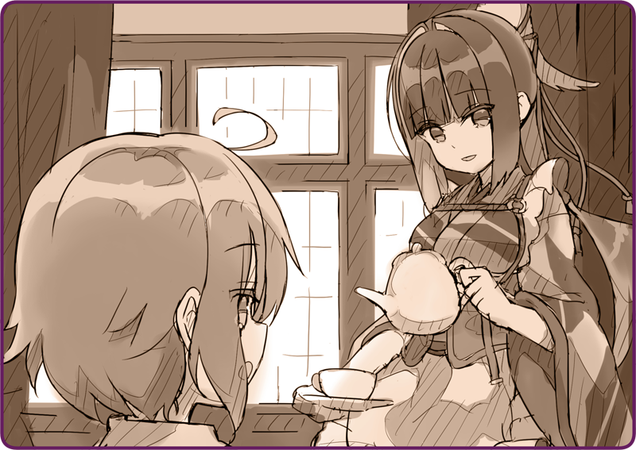

Một ngày trôi qua.
Tôi đang ở một mình, luôn tay khuấy nồi, miệng không ngừng lẩm bẩm. Bên trong là cá tuyết khô, hành tây và khoai tây. Đây là món ăn tiêu chuẩn vào mùa đông tại đảo Helena… hay đáng ra nên nói là tôi chẳng còn nguyên liệu nào khác để mà nấu nữa. Thật ra tôi muốn nêm nếm món này theo khẩu vị Hoàng Quốc kia, nhưng tức thì phải bỏ cuộc vì đến một lọ xì dầu còn chẳng có.
Hẳn là do người ấy đã bảo rằng tôi không thể chiến đấu được nữa. Trước giờ tôi đã hỏng không ít lần, nhưng bị một lỗi mà chẳng rõ có sửa được hay không thì đây là lần đầu tiên. Có lẽ vì thế mà cơ quan lý luận của tôi mới trở nên thất thường…
Bất chợt, tôi nghe thấy một tiếng gõ cửa dè dặt.
Đúng là mỗi sáng sau khi tỉnh dậy, ngài ấy luôn mặc quần áo chỉnh tề rồi thả bộ đâu đó. Lúc nào cũng vậy, ngài ấy đi đâu hay làm gì, tôi chẳng hề hay biết.
Dù rằng bình thường ngài ấy không hay gõ cửa mỗi khi về nhà, nhưng hôm nay xem ra lại biết giữ kẽ rồi. Tôi thử nghĩ lý do, thì nhanh như chớp đã đoán ra.
Không thể tin được. Đã biết rằng tối nay sẽ đón khách từ Hoàng Quân tới mà ngài vẫn nghịch máy móc được hay sao. Tôi lau sạch tay bằng tạp dề và rảo bước đến cửa ra vào.
Rosa: “Kya!!”
Rosa: “Ư-Ưm… chào chị.”
Xem ra tôi đoán nhầm mất rồi.
Rosa: “Ahahaha… không sao đâu ạ. Ừm, cái này là ông em bảo em mang tới…”
Nói đoạn, em đưa tôi cái túi đay đang giữ trước ngực.
Chiếc túi được buộc cẩn thận bằng dây diều. Nhìn vào bên trong, tôi thấy món cá hồi phi lê hun khói.
Rosa: “Cảm ơn chị vì hôm qua đã giúp em.”
Rosa: “Không sao đâu ạ, là lòng thành của nhà em mà.”
Tôi đành nhận lấy món xông khói này. Dù xuân sắp về rồi, nhưng bên ngoài hẵng còn lạnh lắm. Đầu mũi cô bé đỏ chót cả lên.
Rosa: “Dạ?”
＊ ＊ ＊

Tôi để Rosa ngồi trước lò sưởi.
Rosa: “Oa, trông ngon ghê!”
Chỗ tầm xuân nhận từ chủ nhân khi trước còn dư, tôi đã nấu cùng mật ong để làm thành mứt.
Rosa: “Thế thì mình cùng ăn đi.”
Rosa: “Vậy chị không ăn được sao?”
Hai chúng tôi cùng phết mứt lên bánh quy rồi thưởng thức.
Rosa: “Chua chua ngọt ngọt ngon quá đi~”
Bờ má đo đỏ phồng lên, em mỉm cười đầy vui sướng.
Rosa: “Karasuba-san đang làm hầu gái trong dinh thự này nhỉ.”
Rosa: “Em xin lỗi.”
Rosa: “Lúc mới gặp, em đã nói những lời không hay với chị. Em cứ tưởng chị là Hình nhân Chiến đấu của Hoàng Quốc…”
Rosa: “Em, ghét Hình nhân Chiến đấu lắm.”
Thốt nhiên, những lời cô bé nói ra nghe thật lạnh lùng.
Rosa: “Không phải, mà bởi họ không hề bảo vệ chúng em.”
Em đáp lấp lửng, mắt vẫn nhìn chăm chăm vào nước trong cốc. Có vẻ em đang mang nặng một hồi ức không tiện nói ra.
Rosa: “Em cùng ông đã lánh nạn tới đây. Cũng được vài năm rồi.”
Rosa: “Hình nhân của Hoàng Quân tới… chiếm đóng thị trấn của em… Vậy mà, lúc quân Lobelia tấn công… thì đám người đó chẳng hề bảo vệ chúng em chút nào. Lại còn…”
Mặt nước khẽ xao động, bởi nước mắt của Rosa.
Rosa: “Ư… hức…”
Em không kìm được lòng mình, để hàng lệ cứ thế trào ra.
Tôi thoáng hoang mang, không biết nên làm gì với cô bé.
Những lúc thế này nếu là con người… nếu là chủ nhân, thì ngài sẽ ứng phó thế nào đây…?
Chầm chậm, tôi vươn tay ra xoa vai cô bé.
Rosa: “Karasuba-san!”
Phản ứng thật ngoài dự đoán.
Cô bé vùi mặt vào ngực tôi mà khóc nấc lên trong bi thương.
Cái gì không sao? Tôi cũng chẳng biết nữa.
Dẫu vậy, tôi vẫn tiếp tục lặp lại những lời ấy.

 “... Lỡ để ngài ấy thấy cảnh khó coi mất rồi…”
“... Lỡ để ngài ấy thấy cảnh khó coi mất rồi…”